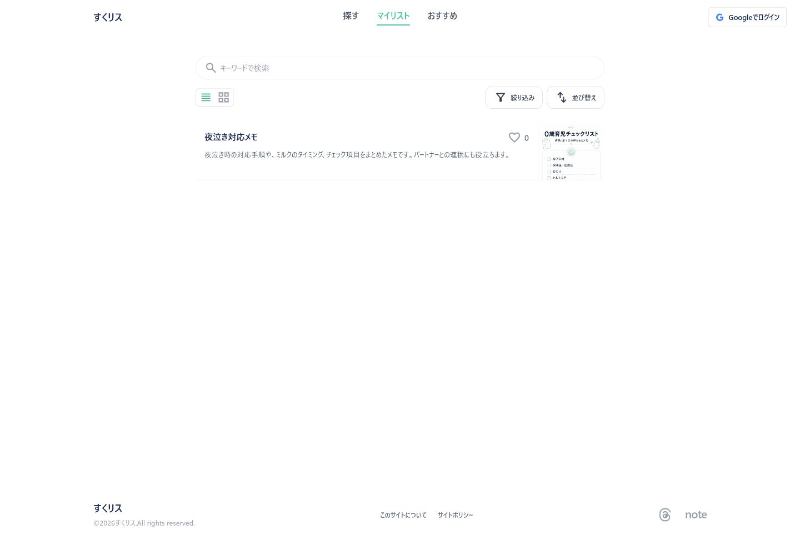
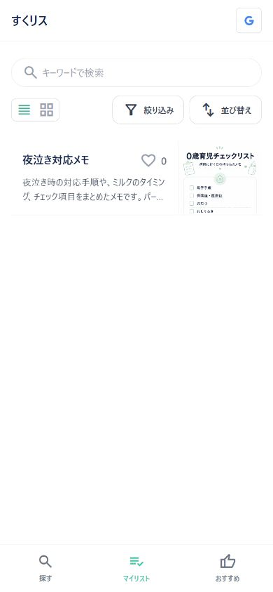
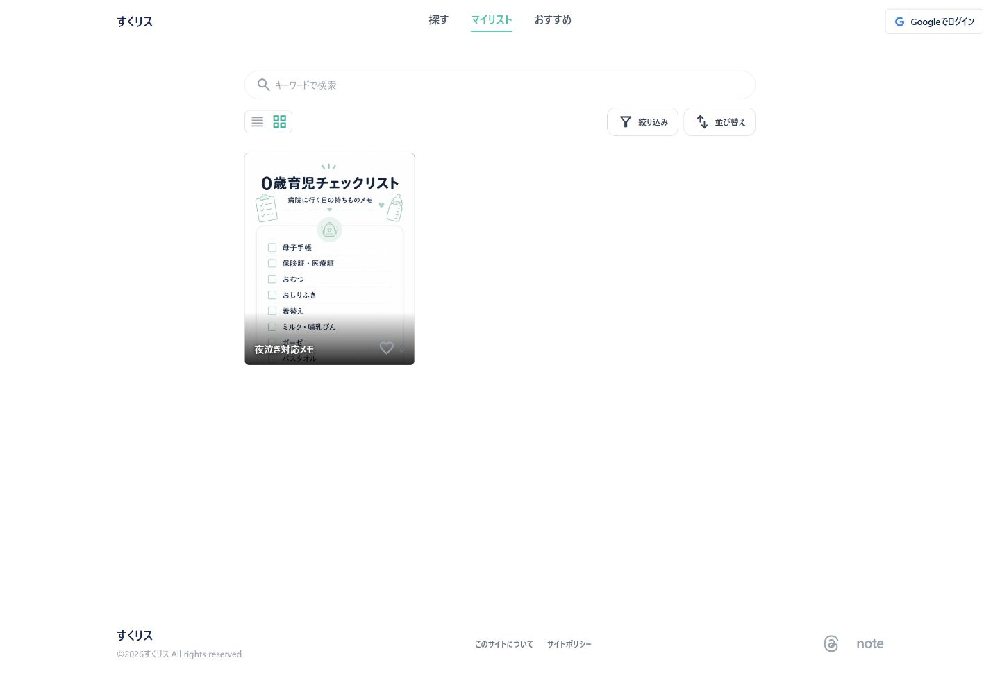
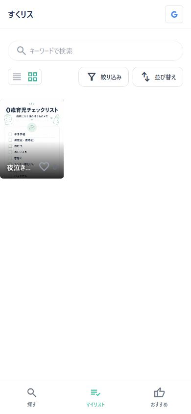
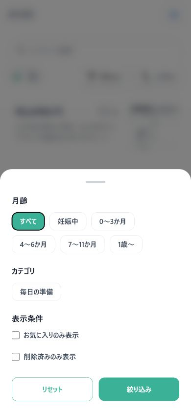

Current local implementation specification
マイリスト（PC / SP）
端末内に保存したチェックリストrunを表示し、headline_viewだけでスワイプ削除を行う画面。grid_viewには削除機能を持たせない。
この資料は、実際の localhost:4321 をPC/SPビューポートで撮影し、現在のAstro実装とクライアント側の動作を仕様として整理したものです。画像はキャプチャ時点の端末データ・公開データを反映します。
1. 画面の目的と導線
ユーザーが開始したチェックリストを端末内で管理するページです。公開カードを探すページとは異なり、表示対象はIndexedDBに保存された自分のrunです。
通常のマイリスト
/my-knowhow/。deletedAt がないrunを表示。
削除済みだけ
/my-knowhow/?deleted=1。削除済みrunを復元確認するための表示。
2. 実画面キャプチャ

通常のマイリスト表示。キャプチャ時点の端末内保存runを反映。

SP固定ナビのマイリスト選択状態。

マイリストの画像グリッド。

grid表示。削除UI・揺れ・長押し編集モードは表示しない。

月齢・カテゴリ・お気に入りに加え、削除済みのみ表示が選べる。

公開一覧と同じおすすめ／新着／人気。
3. headline_viewとgrid_view
| 状態 | 通常操作 | 削除操作 |
|---|---|---|
| headline_view | カードを開く。SPのカードを左へスワイプすると削除アクションが現れる。 | 既存のスワイプ削除を維持。確認ダイアログを受け入れるとrunに削除日時を付ける。 |
| grid_view | カードをタップすると通常のカード操作。横スワイプ、長押し、削除モードは行わない。 | 削除機能なし。headline_viewの削除背景や削除ボタンもgrid_viewでは表示しない。 |
削除導線はheadline_viewの左スワイプだけです。grid_viewでは削除ボタン、削除背景、揺れ、長押し編集モードを表示せず、削除イベントもheadline_viewに限定します。
grid_viewの削除仕様
- grid_viewではカードを通常の表示・詳細導線として扱う。
- 横スワイプ削除はheadline_viewのみに限定する。
- 削除処理は詳細画面の先頭アクションとheadline_viewから共通モジュールを呼び出す。
4. 検索・絞り込み・並び替え
| 機能 | 仕様 | 反映先 |
|---|---|---|
| 検索 | タイトルと説明文の部分一致。入力後250msで更新。 | 画面だけ。URL／settingsには保存しない。 |
| 絞り込み | 月齢、場面、いいね済み。マイリストでは「削除済みのみ表示」も追加。 | phase／scene／deletedはURLに反映。お気に入り・検索は画面状態。 |
| 並び替え | おすすめ順／新着順／人気順。フィルターと同じ画面下端から上へ開く。 | おすすめ＝timelineOrder、新着＝pubdate、人気＝like count。リロードでおすすめ順へ戻る。 |
5. データのキャッシュ・保存法則
- run本体はIndexedDB
likethis-privatev2のrunsobject storeに保存。Supabaseログインなしでもローカル完結する。 - 保存・チェック・メモ・削除などの変更後は
checklist-runs-changedイベントで一覧を再読込。 - 削除は物理削除ではなく
deletedAtを付与して履歴を残す。削除済みフィルターから確認可能。 - バックアップ待ちのrevisionは
backupQueueに保持。ログイン／Driveバックアップを使わない場合でもローカルrunは利用できる。 - 表示モードと選択月齢はsettingsへ保存。URLに明示されたmode／phaseが最優先。
- 端末データにTTLはなく、ブラウザーのサイトデータを消すまで保持。
6. 実装上の根拠
src/components/KnowhowIndexPage.astro：my判定、deleted判定、headlineのスワイプ、grid表示、表示・絞り込み。src/scripts/private-db.ts：runのIndexedDB保存、revision、backupQueue、deletedAt付き削除。src/components/ChecklistRunner.astro／src/components/ChecklistPrivateNote.astro：run・進捗・直接編集メモの保存元。進捗編集中の画面遷移は編集をキャンセルする。